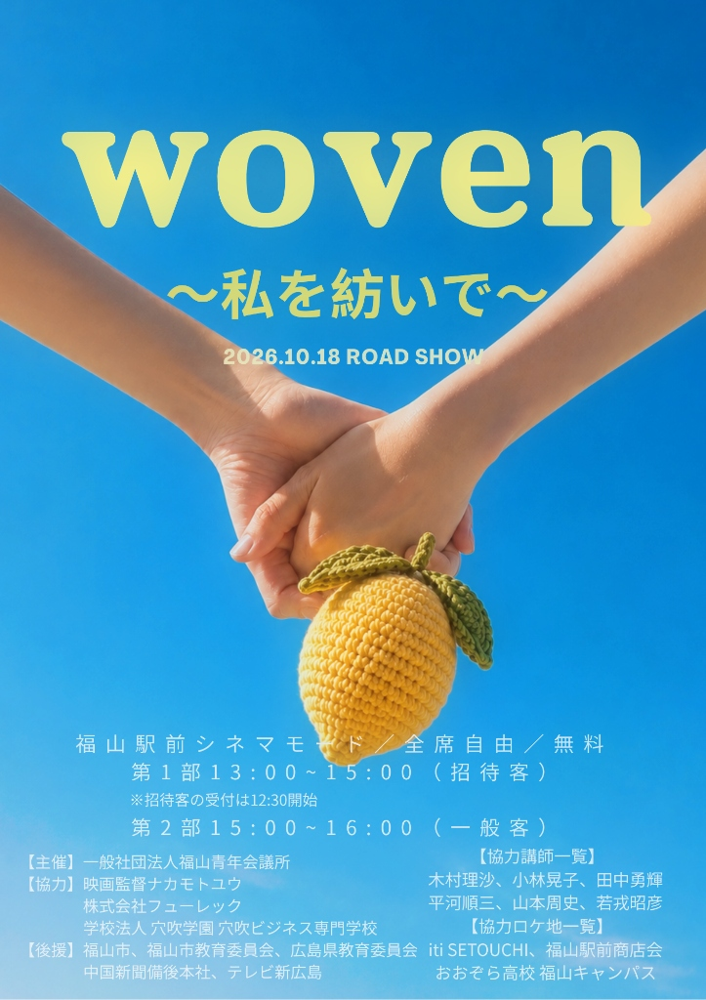

一般社団法人福山青年会議所 主催
「ともに学び、ともに挑む人財の育成」
高校生がプロの映画監督と共に創り上げた青春映画。
作品・事業概要
映画『woven ～私を紡いで～』は、備後・瀬戸内圏域の高校生たちが主体となって制作に取り組んだ青少年リーダーシップ育成事業の集大成作品です。
プロの映画監督・ナカモトユウ氏およびプロ講師陣のレクチャーのもと、生徒自身が「監督・脚本」「役者」「撮影」「編集・発信」に挑戦。地域社会や仲間の大切さを学びながら一本の映画を紡ぎ上げました。
完成した作品は、本物の映画館（福山駅前シネマモード）の大スクリーンで放映します。
上映会プログラム
2026年10月18日(日)
招待のお客様向け 発表会 ＆ 完成上映
13:00 〜 15:00（受付 12:30〜）- 12:30 招待のお客様 受付開始
- 13:00 開会挨拶（理事長挨拶 / 村上監督挨拶）
- 13:08 🎬 映画『woven ～私を紡いで～』作品上映
- 13:28 生徒チーム活動紹介 ＆ スピーチ（監督・脚本 / 役者 / 撮影 / 編集・発信）
- 14:19 感想・質疑応答
- 14:24 ナカモトユウ監督 講評
- 14:29 修了証書授与式・総括・記念撮影
一般のお客様向け 公開上映会
15:00 〜 16:00（受付 15:00〜）/ 入場無料- 15:00 一般のお客様 受付開始
- 15:20 事業全体の活動紹介
- 15:25 🎬 映画『woven ～私を紡いで～』作品上映
- 16:00 第2部 終了
主催・協力・後援
【主催】
一般社団法人福山青年会議所
（We Play 未来人財育成委員会）
【協力】
映画監督ナカモトユウ
株式会社フューレック
学校法人穴吹学園 穴吹ビジネス専門学校
【協力講師一覧】
木村理沙小林晃子田中勇輝平河順三山本周史若戎昭彦
【参加生徒 学校一覧】
近畿大学附属広島高等学校福山校 広島県立戸手高等学校 広島県立神辺高等学校 広島県立東高等学校 広島県立福山工業高等学校 如水館高等学校 福山暁の星女子高等学校 福山市立福山高等学校 並木学院福山高等学校 英数学館高等学校
【協力ロケ地一覧】
iti SETOUCHI福山駅前商店街おおぞら高校 福山キャンパス
【後援】
福山市福山市教育委員会広島県教育委員会中国新聞備後本社テレビ新広島
会場案内 ＆ アクセス
福山駅前シネマモード
〒720-0062 広島県福山市伏見町4-33
（JR福山駅南口より徒歩約3分）